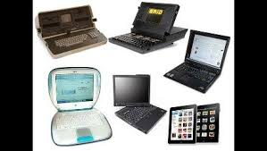
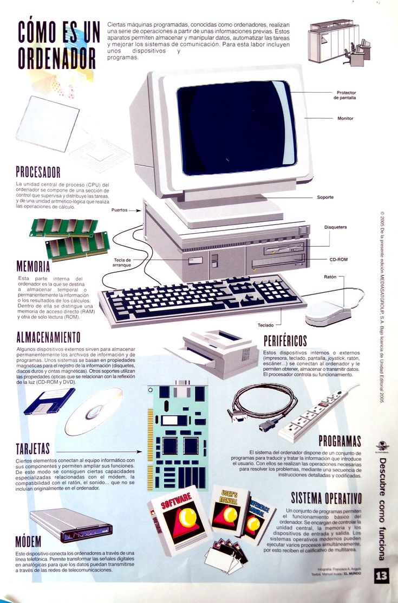

Cuál fue la primera computadora de la historia Fue creada por el ingeniero alemán Konrad Zuse entre 1935 y 1936. Era capaz de hacer cuatro operaciones matemáticas y pesaba 1.000 kilos. Una réplica de la Z3, que se encuentra en el Museo Alemán, en Munich (Wikipedia) La computadora se podía programar por medio de una cinta perforada. En los hechos funcionaba como una calculadora gigante (pesaba 1.000 kg y tenía unas 20.000 piezas). La máquina podía efectuar sumas, restas, multiplicación y división. A su vez era capaz de leer y guardar información en la memoria. Tenía una memoria de 64 palabras de 22 bits y dos registros de coma flotante de 22 bits cada uno.La única unidad eléctrica era un motor eléctrico para dar la frecuencia de reloj de 1 Hz (ciclo por segundo) a la máquina, que era capaz de realizar sumas a una velocidad de 5 segundos y multiplicaciones, en 10 segundos. Se dice que Zuse construyó la computadora en el departamento de sus padres que financiaron el proyecto, junto con su hermana, algunos estudiantes y un fabricante de calculadoras de Berlín. Konrad Zuse, ingeniero alemán, y creador de las computadoras Z1, Z2 y Z3. (Wikipedia) Además de la Z1, Zuse luego desarrolló, entre 1931 y 1941, las computadoras Z2 y Z3. Estos equipos antecedieron a la computadora ENIAC, por las siglas en inglés de Computador e Integrador Numérico Electrónico, que se presentó públicamente en febrero de 1946 y operó hasta 1955 Era digital e inicialmente fue diseñada para calcular las tablas de de artillería para el Laboratorio de Investigación Balística del Ejército de los Estados Unidos. La computadora, todo un símbolo de avanzada de la época, era más rápida que la Z1 a la hora de hacer cálculos matemáticos. La ENIAC podía resolver 5000 sumas o 300 multiplicaciones en 1 segundo, así como calcular la potencia 660000 de un número de 10 cifras. Pero no era capaz de resolver divisiones. La computadora empleaba válvulas electrónicas o de vacío. Las operaciones, como es de imaginar, no se realizaban de manera automática y con tan sólo tocar un botón, sino que era necesario conectar y cambiar los cables correspondientes, tal como sucedía en las centrales telefónicas. Las programadoras de ENIAC fueron Betty Snyder Holberton, Jean Jennings Bartik, Kathleen McNulty Mauchly Antonelli, Marlyn Wescoff Meltzer, Ruth Lichterman Teitelbaum y Frances Bilas. Los ingenieros John Presper Eckert y John William Mauchly fueron los encargados de la construcción de la máquina, que se llevó a cabo en la Universidad de Pensilvania. La computadora era un verdadero gigante tecnológico: tenía 17.468 válvulas electrónicas, pesaba 27 toneladas y ocupaba una superficie de 167 metros cuadrados. Las programadoras de ENIAC fueron Betty Snyder Holberton, Jean Jennings Bartik, Kathleen McNulty Mauchly Antonelli, Marlyn Wescoff Meltzer, Ruth Lichterman Teitelbaum y Frances Bilas. Si bien cumplieron un rol fundamental, sus aportes recién se reconocieron muchos años después: recién en 1997 fueron incluidas en el Salón de la Fama de Women in Technology International. La ENIAC fue construida en la Universidad de Pensilvania por John Presper Eckert y John William Mauchly: ocupaba 167 metros cuadrados y consumía 160 kW. En los inicios de la computación las tareas de programación era realizadas principalmente por mujeres. En el caso de la NASA, por ejemplo, las primeras computadoras fueron programadas por mujeres, muchas de las cuales anteriormente se habían desempeñado haciendo cálculos aeroespaciales para esa entidad. En aquel entonces se las denominaba
 CONOSER LAS 3 ETAPAS DE LA EVOLUCION EN LAS LAPTOPS
Como todo en esta vida, al paso de los años las cosas o circunstancias cambian, en este blog estaremos hablando de los cambios que ha tenido la computadora en cada una de sus etapas o generaciones. Las computadoras han ido evolucionando con el paso del tiempo y eso es maravillo pues nos permiten realizar cosas cada vez más asombrosas.Existen un total de 5 generaciones y se diferencian por lo siguiente: Primera generación (1940-1955) Las primeras nociones de lo que podía ser una computadora se pudieron percibir durante el transcurso de la segunda guerra mundial (1939-1945), cuando un grupo de científicos de la computación (entre ellos Alan Turing) crearon una máquina capaz de descifrar los mensajes de los nazis y con ello lograron, lo que muchos creen y dan por hecho, acortar la duración de la segunda guerra mundial. Las primeras computadoras ocupaban una habitación completa y para hacernos una idea, el procesador de uno de los modelos de estas primeras computadoras pesaba aproximadamente 30 toneladas (30,000 kilos) y ocupaba un espacio aproximado de 610x1219 centimetros. Tercera generación (1965-1971) Para esta generación se empezaron a usar procesadores integrados con lo cual se pudieron abaratar los costos de producción, aumentar la capacidad de procesamiento de las máquinas y, a como en la generación pasada, reducir el tamaño. Para esta generación se logró que estas máquinas pudiesen calcular las primeras 500 mil decimales del valor de Pi. Cuarta generación (1972-1980) Esta generación se caracteriza por la creación de los microprocesadores, lo cual como has de imaginarte logró que se pudiesen crear computadoras más pequeñas, para este momento se empiezan a ver las primeras computadoras denominadas “PC” (personal computer por sus iniciales en inglés) ya que eran idóneas para su uso personal. Para este momento se puede lograr que una computadora con microprocesador logre lo mismo o de pelea a una computadora de la primera generación. Quinta generación (1983-2019) Ya es en la quinta generación cuando por fin se ven los primeros modelos de laptops o computadoras portátiles. IBM fue quien sacó la primera laptop, logrando con eso revolucionar el mercado de las computadoras. Poder decir cómo terminará esta generación de las computadoras o qué será lo siguiente que revolucione la industria de las computadoras es una tarea difícil pero sabemos que más de uno puede imaginarse por cual rumbo estamos yendo.
QUE COMPONENTES TENIAN LOS DISPOSITIVOS DE ANTES
Cómo funcionaban las primeras computadoras De esta forma se programaron muchas de las primeras computadoras: modificando mecánicamente las rutas por las que viajaba la electricidad, cambiando los pasos del procesamiento y obteniendo un resultado final, uno distinto para cada programa o para cada valor que se introducía. A partir de esto nació la necesidad de tener ingenieros dedicados a programar estos equipos. Esta primera generación de ingenieros logró que la ENIAC y otras computadoras de la época hicieran cálculos de tablas balísticas que permitían a los ejércitos tener mucha mayor precisión al usar sus proyectiles. Lo cual representó una ventaja real para el país que tuviera a su disposición una computadora e ingenieras o ingenieros en software. Desde las primeras computadoras se hizo evidente la necesidad de usar instrucciones de control de flujo, saltos, ciclos y ramificaciones que se utilizaban conforme las secuencias de código lo indicaban. Aquí hay una importante discusión respecto a quién implementó primero estas secuencias de código, pero es un hecho que computadoras como la ENIAC, que no fueron concebidas para funcionar así, aceptaron la escritura secuencial de códigos, de modo que este método se consolidó como un estándar. Hoy en día aún utilizamos estructuras de control de flujo para nuestros programas, ciclos y demás instrucciones, con la gran diferencia de que ahora tenemos computadoras en todos lados. Probablemente el teléfono que llevas ahora mismo en el bolsillo es 1300 veces más poderoso que esas primeras computadoras programadas con tarjetas perforadas, ocupando un espacio 40 millones de veces menor. En la programación moderna, una página web se puede convertir en una aplicación móvil conservando casi el mismo código por medio de frameworks o librerías, como React Native o Ionic. Además, plataformas como GitHub facilitan la escritura de código de forma colaborativa entre equipos de ingeniería de software alrededor del mundo
¿QUE PROSESADOR USO LA PRINERA LAPTOP? El primer ordenador portátil, el Osborne 1, usó un procesador Z80 a 4 MHz. Características del Osborne 1 Procesador Z80 a 4 MHz 64 kilobytes de memoria RAM Pantalla monocroma CRT de 5 pulgadas Dos unidades de disco de 5¼ pulgadas, con 40 pistas y 100 Kb de capacidad Puerto paralelo IEEE-488 para conectar a impresoras Puerto serie compatible RS-232 a 1200 o 300 baudios para conectar a módems externos o impresoras serie Teclado separable, en la tapa de la caja3-QUE VENTAJAS Y DESVENTAJAS TIENEN LAS LAPTOS DE HOY EN DIA PARA EL SER HUMANO ?
DESCRIPSION
inalámbrica y hace que su disponibilidad sea un asunto obligatorio. Operación fuera de línea Los portátiles están equipados con batería y pueden funcionar en ausencia de red eléctrica. Esto significa que las computadoras portátiles se pueden usar temporalmente cuando o donde no haya internet disponible. Esta operación fuera de línea es otra ventaja para el factor de movilidad de las computadoras portátiles. Seguridad Las computadoras portátiles son mucho más seguras que las computadoras de escritorio en muchos sentidos. Las computadoras portátiles son artículos para llevar en la mano y se pueden llevar a donde quiera que vayas. Las computadoras portátiles son compactas y livianas, por lo que se pueden guardar en cajones cerrados, etc. Muchas computadoras portátiles hoy en día vienen equipadas con sensores de huellas dactilares o funciones de reconocimiento facial. Estas características hacen que las computadoras portátiles sean seguras en términos de uso no autorizado. Dado que las computadoras portátiles son compactas y livianas, es fácil llevarlas a cualquier lugar y no enfrentar ningún obstáculo para esto. Hace más trabajo Las computadoras portátiles son computadoras todo en uno y puedes usarlas a tu conveniencia. Puedes sentarte en la alfombra, el sofá o la cama si es necesario y seguir usando la computadora portátil. No tienes que estar muy cerca de la toma de corriente todo el tiempo. Todo lo que necesitas para operar la computadora portátil está disponible y es completamente funcional. Así que, en la práctica, hay pocas cosas que puedan convertirse en un obstáculo para realizar tu trabajo. Estadísticamente hablando, los dispositivos móviles hacen que el tiempo de trabajo por día aumente más allá del horario de oficina porque pueden operarse convenientemente desde la comodidad del hogar. Por lo tanto, si usas una computadora portátil para el trabajo, existe una gran posibilidad de que hagas más cada día.HISTORIA DE LAS LAPTOS
REFERENCIA
1-ENTRA
2-ENTRA
3-ENTRA
